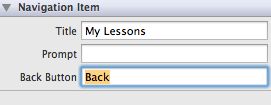

June 2012
30/06/2012 20:04:01
¶
●
A Palindromic Chinese Sonnet
菩 薩 蠻 - 納 蘭 容 若
霧 窗 寒 對 遙 天 暮, 暮 天 遙 對 寒 窗 霧
花 落 正 啼 鴉, 鴉 啼 正 落 花
袖 羅 垂 影 瘦, 瘦 影 垂 羅 袖
風 剪 一 絲 紅, 紅 絲 一 剪 風
* This format is known as Ci, but I feel ‘sonnet’ is probably more apt as an title.
** By ‘Palindromic Chinese Sonnet’ I mean ‘迴文詞’
#chinese #poem
30/06/2012 19:24:45
¶
●
"Bobby Fischer" by David Tang
An old article I stacked away for some time. It was written in 2004 I suppose.
“This is the worst player in the world calling the best player in the world.” So Henry Kissinger telephoned Bobby Fischer, who was stewing in one of his capricious stupors, and urged him to fly to Reykjavik for the World Chess Championship in July 1972. Everything had been set up: the reigning Russian champion Boris Spassky was already in Iceland; all the tickets for the match in the insipid sports hall, the Laugardalsholl, had been sold out; the prize money at US$250,000 was 20 times more than the last world championship, and the entire fraternity of chess was waiting for the clash of the titans. The Soviets had dominated the game of chess since World War II, but now came the thrill of an unlikely American trying to break that supremacy. The Cold War at the time also gave the entire event a real frisson, for the confrontation of the Soviet champion and American champion on the chess board was seen to be a fight between Democracy and Communism, a combat between the intense hostilities of the world’s two super-powers. It was the High Noon of chess, and ideologies. But Mr. Fischer was prevaricating.
I well remember my own adolescent excitement during that summer. I was eighteen and had been obsessed with playing chess almost from my first day at boarding school, when I couldn’t read English and turned to chess notations. For 5 years I played hours of chess each day and travelled around England taking part in tournaments. And my inspiration was Fischer. To me, he was a genius who made moves on the chess board that nobody had dared or thought of before. I had studied all the games of the Russian masters, particularly Botvinnik and Petrosian, whom I respected with awe, but they were like robots, reliable, methodical and effective but rather mechanical. Yet when I got to know the play of Fischer, I began to realize that he gave elegance and artistry to the game. He brought new blood to chess that was not unlike the arrival of Nijinsky at Ballet Russe.
Fischer did eventually turn up at Reykjavik, but a couple of days late amidst all the tension of a suffering and waiting crowd. His idiosyncratic and volatile behaviour, coupled with his appalling manners, was already well-known and much dreaded. Therefore, we disciples were relieved that he got on his plane. Everyday we anxiously followed his moves on the wireless and television. The suspense in a chess game, which is seemingly slow, is however as intense as any fast game. Cricket fans will tell you the same. In the end, Fischer triumphed and became world champion. The Russians’ stronghold was broken and her National pride lost. Poor Spassky!
Then, just as one might expect from a man with an undecipherable complex, Fischer went into hiding and after an appearance on television with Bob Hope, he became a recluse from which he emerged only fleetingly for a re-match with Spassky in 1992. He thrashed his former opponent 10-5. But the only trouble, even though he won US$3.3million, was that the match was played in Yugoslavia during U.N. sanctions and a warrant for his arrest in the U.S. was issued immediately afterwards. Ever since, Fischer has been a fugitive, mainly living secretly in the Philippines and Japan and occasionally making extremely provocative radio interviews. On the trauma of 9/11, Fischer praised the terrorists’ attack, saying that America should be “wiped out”. He also described Jews, even though he himself is Jewish, as “thieving, lying bastards.”
Last July, he was arrested at Narita Airport for allegedly using an invalid U.S. passport and is now languishing in jail, with the possibility of being extradited to his native America to face his indictment for which he could go to prison for 10 years.
I remember asking myself when I was last in Reykjavik: “How do and can we admire a genius who is however clearly evil in his thoughts?” Fischer’s anti-semetism and moral turpitude are repellent. Yet he is a stupefying wonder in chess whose record stands above all other players, lending magic to this majestic game of the intellect. Let’s hope at least that his Japanese girlfriend Miss Watai (who has described herself as a “pawn” that might turn into a queen!) might bring him round to his senses so that Fischer, who forfeited his world title in 1975, could once more contribute to the brilliance of chess, but without the ugliness of his tarnished vileness.
29/06/2012 20:18:58
¶
●
use xcode-select to select which XCode to run e.g.
xcode-select -switch /Applications/XCode.Version.app
28/06/2012 20:15:21
¶
●
It is how to list schemes in a xcode project
mbp002:menote user$ xcodebuild -project menote.xcodeproj/ -list
Information about project "medianote":
Targets:
menote
menoteTests
Build Configurations:
Debug
Release
If no build configuration is specified and -scheme is not passed then "Release" is used.
Schemes:
menote
28/06/2012 19:34:32
¶
●
It is a very old news, back in 2004:
“Three gamblers who won £1.3m at the Ritz Club casino using technology worthy of James Bond have been allowed to keep their winnings. The three people—described as a “chic and beautiful” Hungarian woman and two “elegant” Serbian men—were accused of using a laser scanner hidden inside a mobile phone to measure the speed of the ball on the roulette table at the St James club. This beamed the data to a microcomputer, which predicted where it would land, flashing the information on the phone’s screen. The trio was arrested in March.
London’s police have not said whether they found such a device. But on December 7th they announced that no further action would be taken and that their inquiry was over. The three suspects, who were on bail, are now free to leave Britain. The Times newspaper reported that because the high-tech scanner didn’t interfere with the ball or roulette wheel, the gamblers had not broken the law.”
It will not be hard to implement in Android or iOS these days, I suppose? :-)
#idea #mobile computing
27/06/2012 20:15:21
¶
●
A scheme calls a number of targets
#xcode
27/06/2012 19:34:55
¶
●
Plans are nothing; planning is everything.
Dwight D. Eisenhower
26/06/2012 20:10:39
¶
●
Had "Error: No developer directory found at /Developer. Run /usr/bin/xcode-select to update the developer directory path" when I ran xcodebuild.
Most likely an issue left from an old xcode installation (pre 4.2)
The following command fix the problem
sudo xcode-select -switch /Applications/Xcode.app/Contents/Developer
#xcode
26/06/2012 19:32:43
¶
●
Emacs-style key bindings are built into Cocoa
#cocoa #Today I Learn
25/06/2012 21:23:33
¶
●
#Joseph Stiglitz
25/06/2012 20:09:54
¶
●
Command-E to quick search; Command-G for repeat in-file search
#xcode #keyboard-shortcut
25/06/2012 19:25:51
¶
●
In XCode, Option + Command + ‘Click on a symbol’ will open the definition in a second window
#xcode
24/06/2012 20:11:59
¶
●
Japan before 1937
I just realise I know next to nothing about what was happening in Japan prior to the 1937 Japanese invasion of China.
It seems like, leading up to 1937, there were series of political assassinations and military mutinies that kept pushing Japan politic into far right. Finally in 1937 the Japanese army in Manchu, literally out of control, started an attack on Chinese territory which immediately escalated to a full scale war. Japanese at the time supported the invasion because of both the poor economic condition at home and ambition of land-grab as inspired by Hitler of Nazi Germany.
Should study more about this time period in Asia.
#history #asia #wwii
24/06/2012 19:21:56
¶
●
One use case of Apple TV: Stream WWDC video onto the TV.
I can therefore free up my MBP screen to try out anything mentioned in the WWDC presentations while watching.
#xcode #apple tv
23/06/2012 19:56:05
¶
●
new llvm c compiler warning flag “-Weverything”
#xcode #llvm
22/06/2012 21:34:11
¶
●
Got “To update this application, sign in to the account you used to purchase it” error when trying to update XCode.
Deleted XCode and now App Store allows me to download XCode again.
#xcode
21/06/2012 23:13:32
¶
●
First Responder
The first to receive events
#ios #osx
18/06/2012 17:20:10
¶
●
Chugger
= “Charity” + “Mugger”
#Word of the day
17/06/2012 23:59:39
¶
●
chillax
#Word of the day
16/06/2012 18:40:26
¶
●
Gambit scheme built-in help
$ gsi
Gambit v4.6.2
> ,?
,? : Summary of comma commands
,h | ,(h X) : Help on procedure of last error or procedure/macro named X
,q : Terminate the process
,qt : Terminate the current thread
,t : Jump to toplevel REPL
,d : Jump to enclosing REPL
,c | ,(c X) : Continue the computation with stepping off
,s | ,(s X) : Continue the computation with stepping on (step)
,l | ,(l X) : Continue the computation with stepping on (leap)
,N : Move to specific continuation frame (N>=0)
,N+ | ,N- : Move forward/backward by N continuation frames (N>=0)
,+ | ,- : Like ,1+ and ,1-
,++ | ,-- : Like ,N+ and ,N- with N = nb. of frames at head of backtrace
,y : Display one-line summary of current frame
,i : Display procedure attached to current frame
,b | ,(b X) : Display backtrace of current continuation or X (cont/thread)
,be | ,(be X) : Like ,b and ,(b X) but also display environment
,bed | ,(bed X) : Like ,be and ,(be X) but also display dynamic environment
,e | ,(e X) : Display environment of current frame or X (proc/cont/thread)
,ed | ,(ed X) : Like ,e and ,(e X) but also display dynamic environment
,st | ,(st X) : Display current thread group, or X (thread/thread group)
,(v X) : Start a REPL visiting X (proc/cont/thread)
> ,q
#gambit-scheme
16/06/2012 17:10:00
¶
●
Chales Dicken and USA
It is my very simple, naive understanding of the love-hate relationship Chales Dicken and USA: Initially Americans like Chales Dicken because of his works. When Chales first visited USA, the host threw a lavish ball for him. However as tour went on, Chales was upset by the lack of idealism in American politics and the mannerism of the people he met. At the end, he fell out with America when he realised the privacy of his novels in USA has costed him a hugh sum of lost income. He wrote of USA in a very negative light after he was back in England. It took years before the relationship was mended.
#literature
14/06/2012 23:04:09
¶
●
iMac hang for no reason. In Console I can see a dump of GPU debug info. Some people suspect it is the photo screen saver issue - it cannot handle video in the photo library.
#imac
12/06/2012 18:24:35
¶
●
Most important layout related logic are inside MyMovieViewController in the MediaPlayer_iPhone example
#xcode #xcode4 #ios
12/06/2012 17:06:33
¶
●
Finally figure out the back button title not set issue.
That’s what I have been doing in the originating controller’s prepareForSegue method:
self.navigationItem.backBarButtonItem.title = @"Back";
It has not effect. The backBarButtonItem is probably not initialised yet. (Nothing will come out of a call to a nil object).
I should actually create an instance of the UIBarButtonItem
self.navigationItem.backBarButtonItem = [[UIBarButtonItem alloc] initWithTitle:@"Back"
style:UIBarButtonItemStylePlain target:nil action:nil];
#ios #xcode4 #navigationItem
11/06/2012 18:33:00
¶
●

For some reason I cannot set the title of the backBarButtonItem of navigationItem programmatically. I can only set it in the InterfaceBuilder.
Also it must be done in the controller that initiates the page transition
11/06/2012 17:05:15
¶
●
Having some simple fun with gambit-scheme
$ gsi
Gambit v4.6.6
> (define (fact n) (if ( (fact 18)
6402373705728000
#scheme
10/06/2012 18:38:01
¶
●
Annoying. Cannot get the subview resized automatically, despite doing this:
container_view.autoresizesSubviews = YES;
container_view.autoresizingMask = UIViewAutoresizingFlexibleWidth | UIViewAutoresizingFlexibleHeight;
Turns out, to get it to work, I have to set the properties of the subview, which is a MPMoviePlayerController
subview.autoresizesSubviews = YES;
subview.autoresizingMask = UIViewAutoresizingFlexibleWidth | UIViewAutoresizingFlexibleHeight;
[container_view addSubview:subview]
#xcode4 #ios
10/06/2012 17:11:32
¶
●
How to bring a subview to the front when you tap it?
[parentView bringSubviewToFront:childView];
#xcode4 #ios
09/06/2012 23:58:00
¶
●
Forget distance and angle
#math
06/06/2012 21:43:14
¶
●
I am going to court next week. I have been selected for jury duty. It is kind of insane case: Six thousand ants dressed up as rice and robbed a Chinese restaurant. I don’t think they did it. I know a few of them and they won’t do anything like that
Steven Wright
05/06/2012 21:13:11
¶
●
Apparently I am not the only who mistook Emma Stone for Linsay Lohan.
05/06/2012 07:17:58
¶
●
Pasta with Shrimp and Broccoli in a nice Garlic Pesto
- Boil the pasta for the appropriate amount of time
- Cut the broccoli and throw in into a steam pot until it looks all pretty and green
- Boil the prepared shrimp for the appropriate amount of time (and until they look all pretty and orange), or you can simply thaw frozen cooked shrimp
- Prepare pesto by throwing it into a small saucepan with some milk and butter, added some garlic powder and Parmesan cheese
When everything is cooked, throw them all together in a pan, mix, and serve
(source)
#food
02/06/2012 03:26:20
¶
●
Did a ‘git commit .’ but did not realised the commit has failed.
Then I did a ‘git checkout -b next_jira’ and I lost all my changes… Nice.
#xcode4 #git
Index